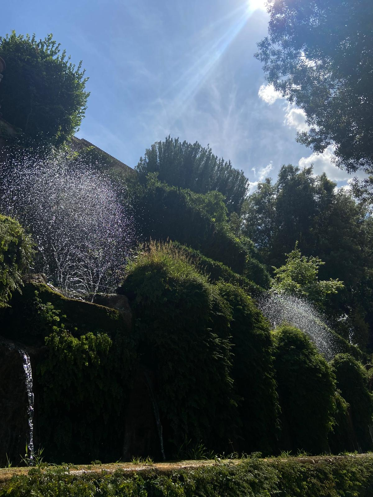
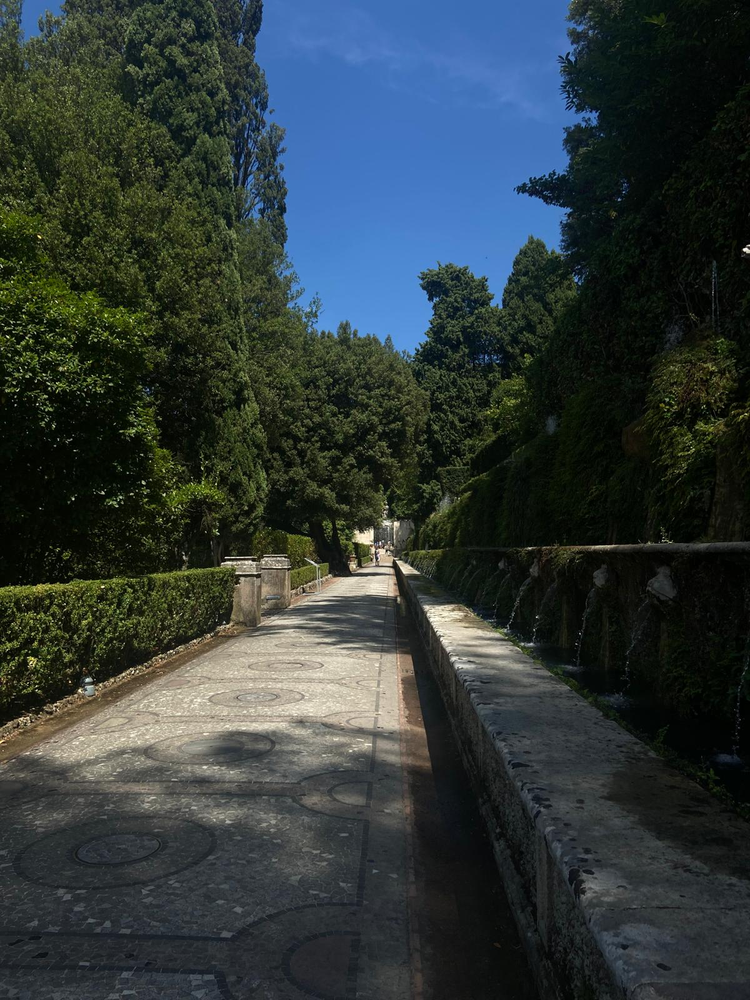

Il Viale delle Cento Fontane è uno dei luoghi più celebri e suggestivi della Villa d’Este a Tivoli. Questo lungo corridoio d’acqua collega la Fontana dell’Ovato alle Pescherie, attraversando il cuore del giardino rinascimentale. La sua struttura, caratterizzata da tre ordini sovrapposti di zampilli e cascate, crea uno spettacolo continuo di movimento, suoni e riflessi che incanta i visitatori da secoli.
Il viale deve il suo nome alle numerose bocche d’acqua — circa cento, come suggerisce la tradizione — che sgorgano da maschere, piccoli mostri marini, aquile e gigli, simboli araldici della famiglia d’Este. L’acqua scorre attraverso una lunga canaletta centrale, accompagnando il visitatore lungo tutto il percorso con il suo mormorio costante.
Progettato da Pirro Ligorio e realizzato tra il 1566 e il 1577, il viale rappresenta una perfetta sintesi tra arte e ingegneria idraulica. L’acqua, proveniente dall’impianto della Fontana dell’Ovato, viene distribuita in modo equilibrato grazie a un ingegnoso sistema di condotte e pendenze che sfruttano esclusivamente la forza di gravità.
Il Viale delle Cento Fontane non è solo un capolavoro tecnico, ma anche un percorso simbolico: il fluire dell’acqua accompagna idealmente il visitatore in un viaggio tra mito e natura, conducendolo dai livelli più alti della villa fino alle Pescherie, dove il giardino si apre in tutta la sua armonia. Ancora oggi, il suono delle cento fontane rappresenta una delle esperienze più suggestive e indimenticabili della visita alla Villa d’Este.
